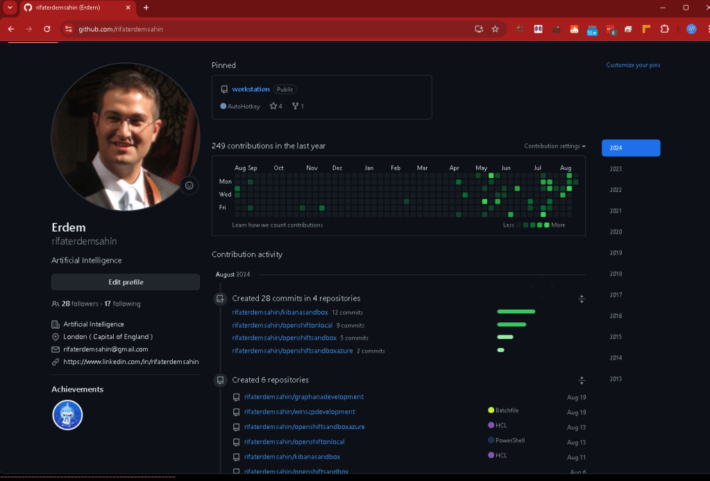

Boosting GitHub Analytics as You Develop a POC with WordPress: A Guide to Tracking and Optimizing Your Development Workflow
In the world of software development, particularly when working on Proofs of Concept (POCs), tracking your progress and understanding your workflow is crucial. GitHub offers a wealth of features to help you monitor your project's health and development dynamics. Coupled with WordPress for managing and showcasing your workshops, this combination can provide you with a powerful platform to track, analyze, and enhance your development efforts. Here’s a guide on how to leverage GitHub analytics and integrate it effectively with WordPress to keep your projects on track.
1. Understanding GitHub Analytics
GitHub provides various analytics tools to help you track the performance and activity of your repositories. Key metrics you should focus on include:
-
Commits: Analyze the frequency and volume of commits to understand the development pace.
-
Pull Requests (PRs): Monitor the number and status of PRs to gauge collaboration and code review activities.
-
Issues: Track open and closed issues to measure the efficiency of bug resolution and feature requests.
-
Contributors: Observe contributions from different team members to assess collaborative efforts.
-
Traffic: Check the traffic metrics to see how many people are visiting your repository.
2. Setting Up GitHub Analytics
To get started with GitHub analytics, follow these steps:
-
Enable Insights: Navigate to the "Insights" tab in your repository to access various analytics options, such as contributors, traffic, and commits graphs.
-
Use GitHub Actions: Implement GitHub Actions to automate workflows and gather more detailed metrics about your build and deployment processes.
-
Third-Party Tools: Consider integrating third-party analytics tools like Codecov or Snyk to gain deeper insights into code quality and security vulnerabilities.
3. Integrating WordPress for Workshop Management
WordPress can serve as a robust platform to manage and showcase your workshops related to the POC development. Here’s how you can leverage WordPress:
-
Create a Project Dashboard: Use WordPress to build a dedicated dashboard for your POC project. Plugins like WP Project Manager can help you track tasks, milestones, and progress.
-
Embed GitHub Data: Use plugins such as "GitHub Embed" to integrate GitHub repositories directly into your WordPress site. This allows visitors to view your repository’s activity, issues, and pull requests directly from your WordPress site.
-
Document Your Workshops: Publish posts or pages in WordPress to document your workshops, tutorials, and development notes. This provides a central place for your audience to stay updated on your progress and learn from your work.
4. Enhancing Visibility and Engagement
To make your GitHub and WordPress integration more effective:
-
Regular Updates: Keep your WordPress site updated with the latest developments from GitHub. Regularly post updates about new features, bug fixes, or changes in the POC.
-
Analytics Integration: Use tools like Google Analytics to track the performance of your WordPress site. This helps you understand how users are interacting with your content and which parts of your project are attracting the most attention.
-
Promote Collaboration: Encourage team members to contribute to the WordPress site by sharing insights, updates, and tutorials. This fosters a collaborative environment and helps keep everyone informed.
5. Evaluating and Iterating
Regularly review the analytics from both GitHub and WordPress:
-
Assess Performance: Evaluate how well your development efforts are progressing based on GitHub metrics. Are you meeting your milestones? Are there any recurring issues that need addressing?
-
Gather Feedback: Use feedback from your WordPress site visitors to make improvements. Engage with your audience to understand their needs and expectations.
-
Adjust Strategies: Based on your analytics and feedback, refine your development and workshop strategies. Adapt to new challenges and opportunities to optimize your workflow.
Conclusion
By effectively leveraging GitHub’s analytics and integrating WordPress into your development workflow, you can significantly enhance your ability to track, manage, and showcase your POC development efforts. This approach not only helps in keeping your project organized but also ensures that you are continuously improving and adapting based on real-time data and user feedback. Embrace these tools and strategies to boost your productivity and make your development process more transparent and effective.
Happy coding and workshop managing! 🚀

Sure! Here’s your text with emojis:
🔗 Connect with me:
-
💼 LinkedIn: https://www.linkedin.com/in/rifaterdemsahin/
-
🐦 Twitter: https://x.com/rifaterdemsahin
-
🎥 YouTube: https://www.youtube.com/@RifatErdemSahin
-
💻 GitHub: https://github.com/rifaterdemsahin
Imported from rifaterdemsahin.com · 2025